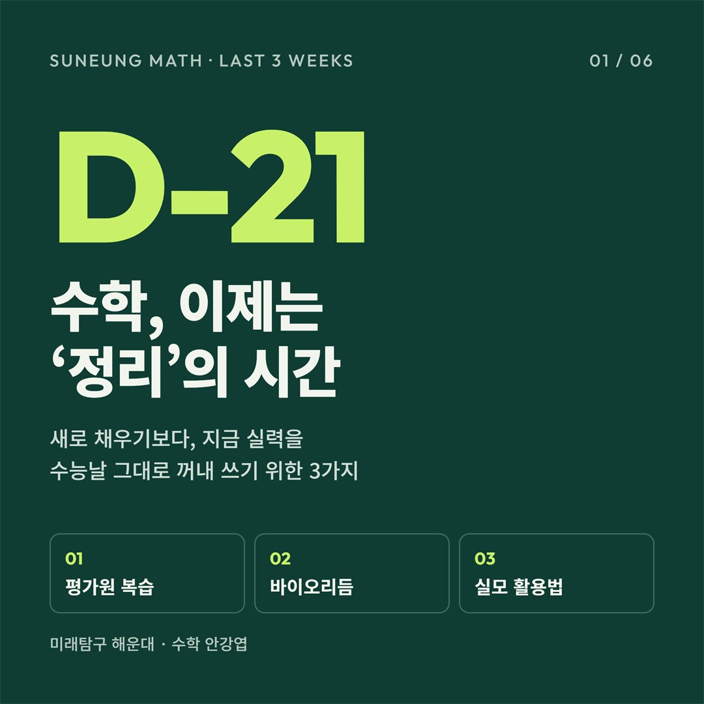
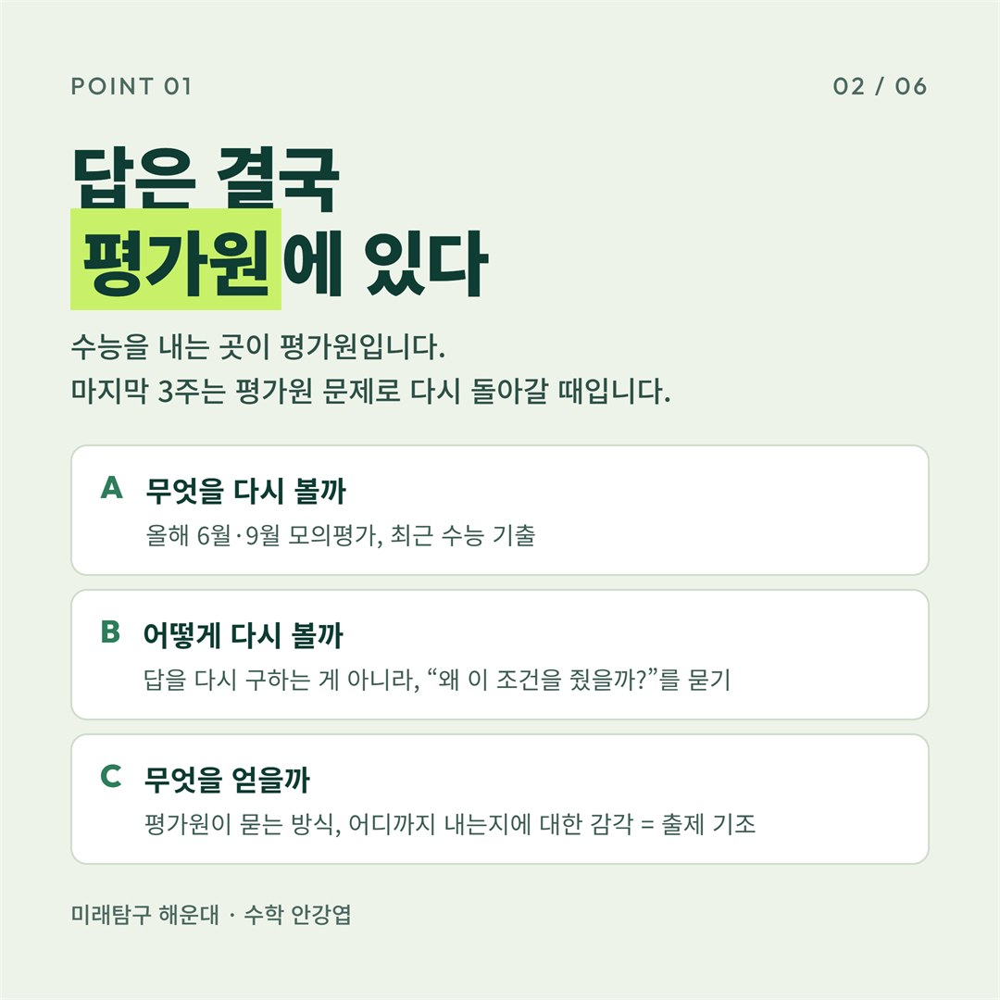
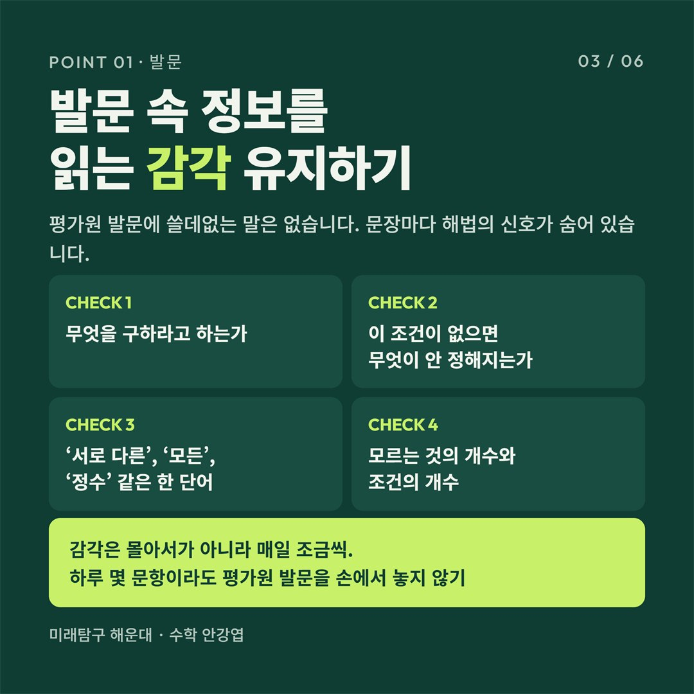
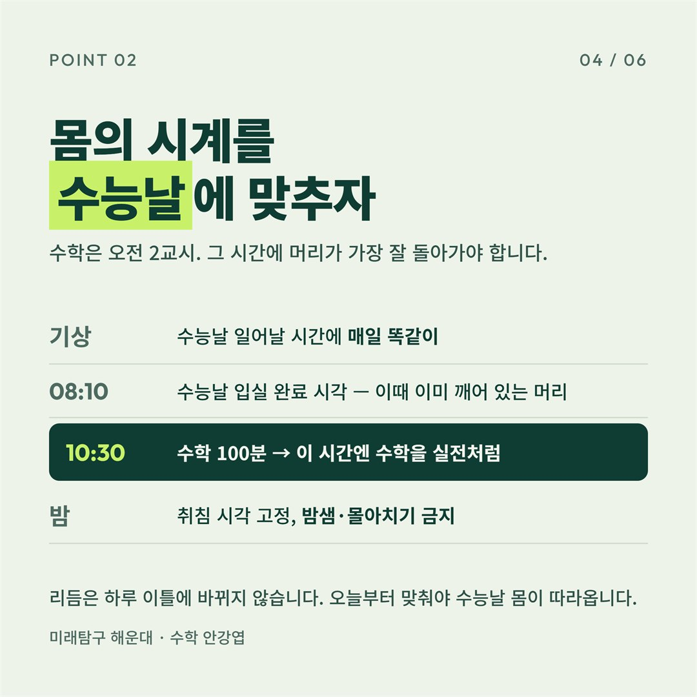
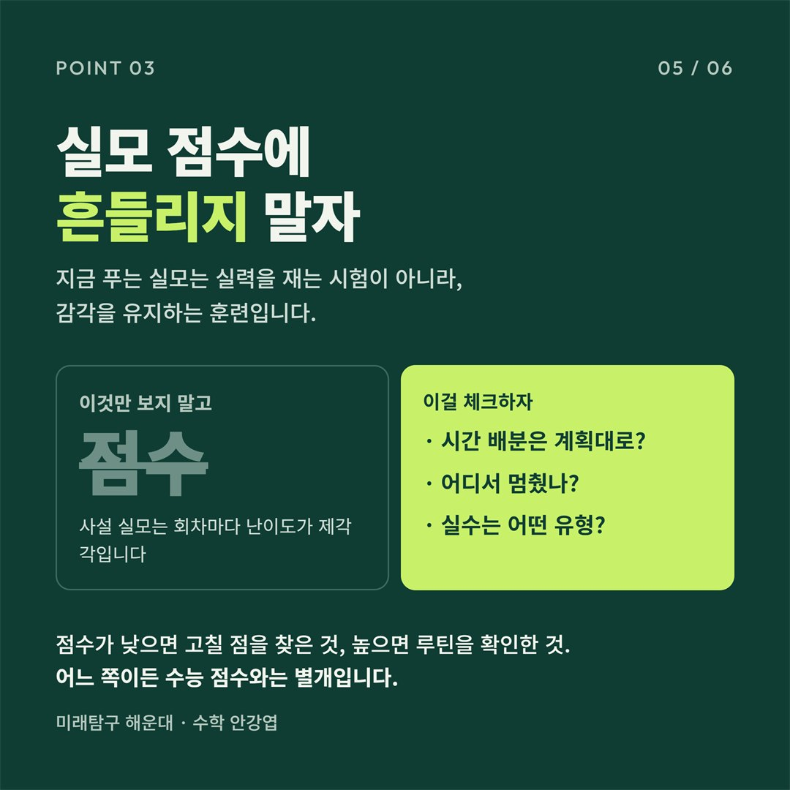
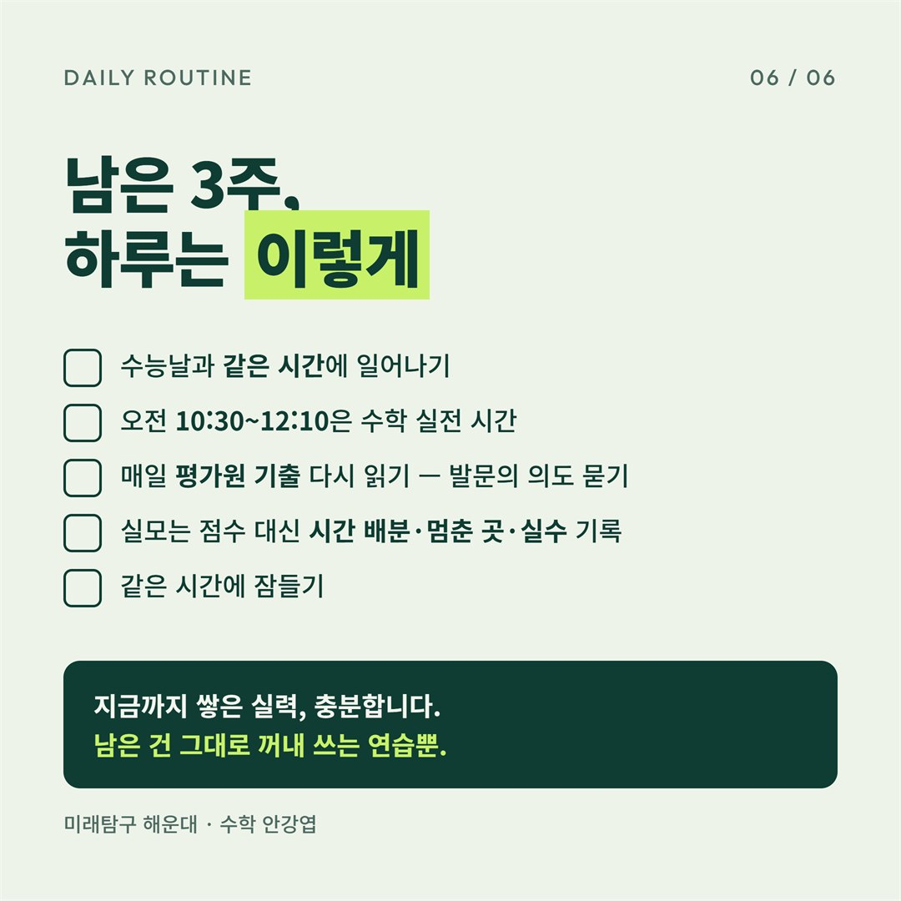

수능 D-21, 수학 마무리는 '정리'입니다: 평가원 복습·바이오리듬·실모 활용법

안녕하세요, 미래탐구 해운대 수학 안강엽입니다.
수능이 이제 딱 3주 남았습니다. 이 시기가 되면 학생들에게서 가장 많이 듣는 말이 "뭘 더 해야 할지 모르겠어요"입니다. 불안한 마음에 새 문제집을 펼치거나, 실전 모의고사를 하루에 몇 회씩 몰아서 푸는 경우도 많습니다.
하지만 남은 3주는 새로운 것을 더 채우는 시간이 아닙니다. 지금까지 쌓아 온 실력을 수능날 그대로 꺼내 쓸 수 있도록 '정리'하는 시간입니다. 오늘은 수능 수업을 하면서 고3·N수생 학생들에게 강조하고 있는 마무리 원칙 세 가지를 정리해 보겠습니다.
1. 답은 결국 평가원에 있습니다

수능을 출제하는 곳은 평가원입니다. 마지막 3주는 올해 6월·9월 모의평가와 최근 수능 기출로 다시 돌아가야 할 때입니다.
여기서 중요한 건 '어떻게' 다시 보느냐입니다. 이미 한 번 풀어 본 문제라 답을 다시 구하는 건 큰 의미가 없습니다. 대신 이렇게 물으면서 읽어야 합니다.
- 이 조건은 왜 주어졌을까?
- 이 문장이 없으면 무엇이 정해지지 않을까?
- 평가원은 이 개념을 어디까지, 어떤 방식으로 묻고 있을까?
이 질문을 반복하다 보면 평가원이 무엇을 중요하게 여기고, 어느 선까지 출제하는지에 대한 감각, 즉 '출제 기조'가 잡힙니다. 이 감각이 있으면 수능장에서 처음 보는 문제를 만나도 당황하지 않고 출제 의도부터 떠올릴 수 있습니다.
2. 발문 속 정보를 읽는 감각을 유지하세요

평가원 발문에는 쓸데없는 말이 없습니다. 문장 하나하나가 풀이 방향을 알려 주는 신호이고, 때로는 '서로 다른', '모든', '정수' 같은 한 단어가 문제 전체의 해법을 결정하기도 합니다.
평가원 문제를 다시 볼 때 아래 네 가지를 확인하는 습관을 들여 보세요.
- CHECK 1. 무엇을 구하라고 하는가
- CHECK 2. 이 조건이 없으면 무엇이 정해지지 않는가
- CHECK 3. '서로 다른', '모든', '정수' 같은 한 단어에 담긴 정보
- CHECK 4. 모르는 것의 개수와 주어진 조건의 개수
이 감각은 며칠 몰아서 공부한다고 생기지 않습니다. 반대로 며칠만 손을 놓아도 금방 무뎌집니다. 그래서 하루 몇 문항이라도 매일 평가원 발문을 읽는 것이 중요합니다.
3. 바이오리듬을 수능날에 맞추세요

수학은 오전 2교시(10:30~12:10)에 치릅니다. 아무리 실력이 좋아도 그 시간에 머리가 덜 깨어 있다면 제 실력을 다 보여 줄 수 없습니다.
그래서 지금부터는 공부의 '양'만큼 '시간대'도 관리해야 합니다.
- 수능날 일어날 시간에 매일 똑같이 일어나기
- 오전 10:30~12:10에는 수학 문제를 실전처럼 풀기
- 잠드는 시간도 고정하고, 밤샘이나 몰아치기는 피하기
리듬은 하루 이틀 만에 바뀌지 않습니다. 오늘부터 맞춰 두어야 수능날 아침, 몸과 머리가 자연스럽게 따라옵니다.
4. 실모 점수에 흔들리지 마세요

이 시기 학생들을 가장 많이 흔드는 건 실전 모의고사 점수입니다. 한 회 잘 보면 안심하고, 한 회 못 보면 며칠씩 마음이 무너지기도 합니다.
하지만 지금 푸는 실모는 실력을 재는 시험이 아니라 감각을 유지하는 훈련입니다. 사설 실모는 회차마다 난이도가 제각각이라 점수가 오르내리는 것이 당연합니다.
점수보다 아래 세 가지를 확인하세요.
- 시간 배분은 계획대로 됐는가
- 어디서 멈췄는가
- 실수는 어떤 유형이었는가
점수가 낮게 나왔다면 고칠 점을 미리 찾은 것이고, 높게 나왔다면 지금 루틴이 잘 돌아가고 있다는 걸 확인한 것입니다. 어느 쪽이든 수능 점수와는 별개입니다.
남은 3주, 하루는 이렇게

지금까지의 내용을 하루 루틴으로 정리하면 다음과 같습니다.
- 수능날과 같은 시간에 일어나기
- 오전 10:30~12:10은 수학 실전 시간
- 매일 평가원 기출 다시 읽기: 발문의 의도 묻기
- 실모는 점수 대신 시간 배분·멈춘 곳·실수 기록
- 같은 시간에 잠들기
마치며
수능을 3주 앞둔 지금, 불안한 건 당연합니다. 그 불안을 새 문제집이나 실모 점수로 달래기보다, 이미 가진 실력을 정리하는 데 쓰셨으면 합니다.
지금까지 쌓아 온 실력, 충분합니다. 남은 건 그 실력을 수능날 그대로 꺼내 쓰는 연습뿐입니다.
수험생 여러분, 마지막까지 응원합니다.
미래탐구 해운대 수학 안강엽
수능 수업 상담이 필요하시면 언제든 문의 주세요.